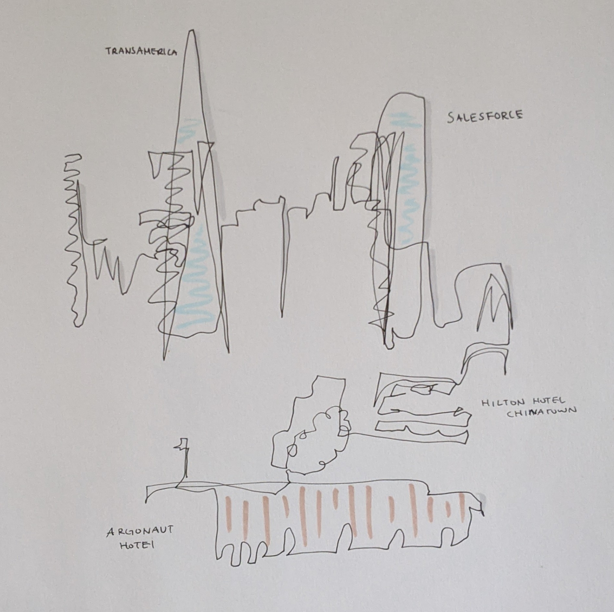

I enjoy dooling sometimes. It keeps my creative side of the brain flowing as I'm also a computer science major. This was one of my favorite doodles I've done when I was in DES14 which is a line drawing of San Francisco.